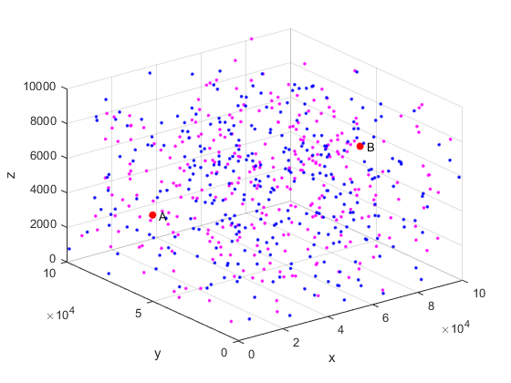
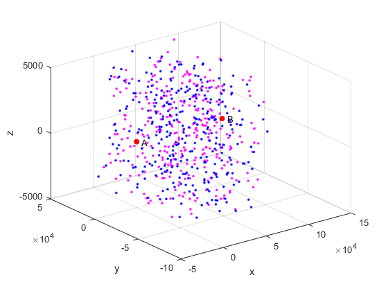
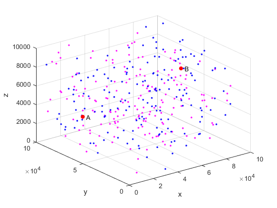
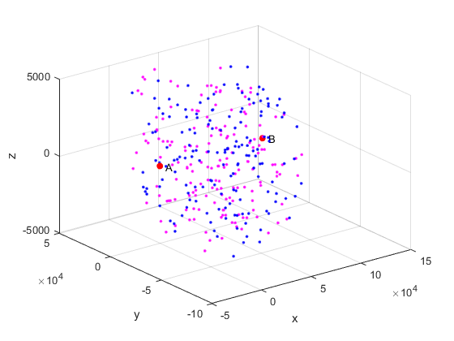
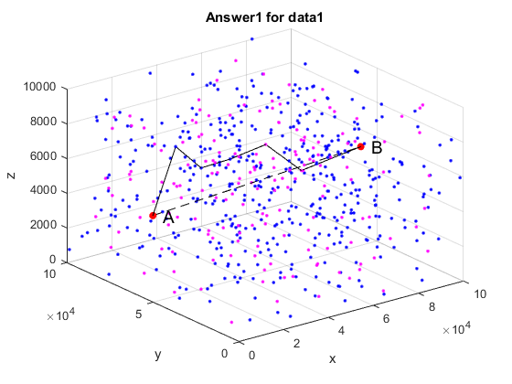
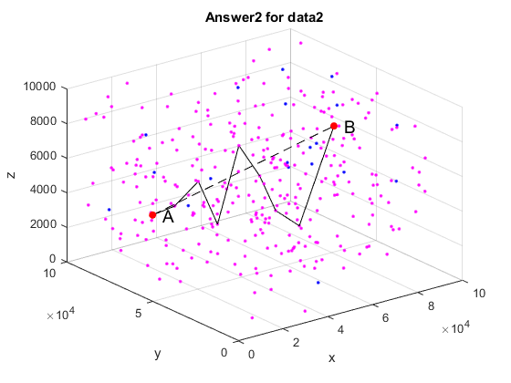
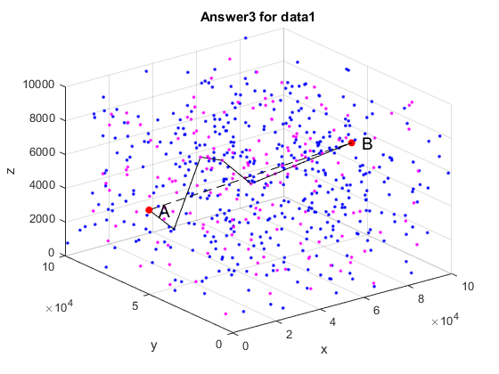
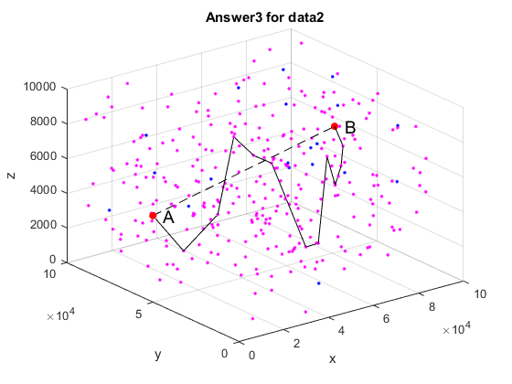

Contents
clear;close all;clc; % This project has been uploaded to github: https://github.com/veritasalice/MCM2019Fcode.git % The algorithm of finding the shortest path was based in part on the source % code of Canhui WANG's blog: https://blog.csdn.net/Canhui_WANG/article/details/51507914 %============================Params=============================== k = 10; % top k paths alpha11=25;alpha21=15;beta11=20;beta21=25;theta1=30;delta1=0.001; %data1 alpha12=20;alpha22=10;beta12=15;beta22=20;theta2=20;delta2=0.001; %data2 % weight param: ObjFun = a*path_distance + b*node_num + c*path_proba % % ablation: % a = 1; b = 0; c = 0; % only d % a = 0; b = 1; c = 0; % only n % a = 0; b = 0; c = 44800; % only p %====================================================================== [data1, datac1] = data_prep('data1.csv',306); [data2, datac2] = data_prep('data2.csv',167); N1 = length(data1); N2 = length(data2); P1 = zeros(N1); P2 = zeros(N2);% init % % save data % writematrix(data1, 'data1.csv'); % writematrix(datac1, 'datac1.csv'); % writematrix(data2, 'data2.csv'); % writematrix(datac2, 'datac2.csv');
Rz =
9.953739135323237e-01 9.607690804426455e-02 0
-9.607690804426455e-02 9.953739135323237e-01 0
0 0 1.000000000000000e+00
Ry =
9.999999760208473e-01 0 2.189938466723011e-04
0 1.000000000000000e+00 0
-2.189938466723011e-04 0 9.999999760208473e-01
Rz =
9.704600916046946e-01 2.412617056281573e-01 0
-2.412617056281573e-01 9.704600916046946e-01 0
0 0 1.000000000000000e+00
Ry =
9.999882461036458e-01 0 4.848469300123636e-03
0 1.000000000000000e+00 0
-4.848469300123636e-03 0 9.999882461036458e-01
    Q1
a = 1; b = 1e4; c = 0; [G1,W1] = build_graph(datac1,25,15,20,25,30,0.001); [G2,W2] = build_graph(datac2,20,10,15,20,20,0.001); [bestDistancePaths1, dCosts1] = get_bestPath(W1, G1, P1 ,N1, k, a, b, c); [bestDistancePaths2, dCosts2] = get_bestPath(W2, G2, P2 ,N2, k, a, b, c); % % save graph % writematrix(G1,'G1.csv'); % writematrix(G2,'G2.csv'); % % save path % writecell(bestDistancePaths1,'BestDistancePaths1.csv'); % writecell(bestDistancePaths2,'BestDistancePaths2.csv');
Q2
a = 1; b = 1e4; c = 0;
[nG1, nW1] = build_strict_graph(datac1, G1, W1, N1); [nG2, nW2] = build_strict_graph(datac2, G2, W2, N2); [bestDNPaths1, dnCosts1] = get_bestPath(nW1, nG1, P1 ,N1, k, a, b, c); [bestDNPaths2, dnCosts2] = get_bestPath(nW2, nG2, P2 ,N2, k, a, b, c); % % save graph % writematrix(nG1,'nG1.csv'); % writematrix(nG2,'nG2.csv'); % % save path % writecell(bestDNPaths1,'BestDNPaths1.csv'); % writecell(bestDNPaths2,'BestDNPaths2.csv');
cut =
245
cut =
46
Q3
a = 1; b = 1e4; c = 44800; P1 = build_graphProb(datac1, G1, N1, alpha11,alpha21,beta11,beta21,delta1); P2 = build_graphProb(datac2, G2, N2, alpha12,alpha22,beta12,beta22,delta2); [bestPaths1, totalCosts1] = get_bestPath(W1, G1, P1 ,N1, k, a, b, c); [bestPaths2, totalCosts2] = get_bestPath(W2, G2, P2 ,N2, k, a, b, c); % % save graph % writematrix(P1,'P1.csv'); % writematrix(P2,'P2.csv'); % % save path % writecell(bestPaths1,'BestPaths1.csv'); % writecell(bestPaths2,'BestPaths2.csv');
Plot paths
datafile1 = 'data1.csv'; datafile2 = 'data2.csv'; flag1 = 167; flag2 = 306; BestDistancePaths1 = 'BestDistancePaths1.csv'; BestDistancePaths2 = 'BestDistancePaths2.csv'; BestDNPaths1 = 'BestDNPaths1.csv'; BestDNPaths2 = 'BestDNPaths2.csv'; BestPaths1 = 'BestPaths1.csv'; BestPaths2 = 'BestPaths2.csv'; d11 = plot_result(datafile1, BestDistancePaths1, flag1,'Answer1 for data1',1); d12 = plot_result(datafile2, BestDistancePaths2, flag2,'Answer1 for data2',2); d21 = plot_result(datafile1, BestDNPaths1, flag1,'Answer2 for data1',3); d22 = plot_result(datafile2, BestDNPaths2, flag2,'Answer2 for data2',4); d31 = plot_result(datafile1, BestPaths1, flag1,'Answer3 for data1',5); d32 = plot_result(datafile2, BestPaths2, flag2,'Answer3 for data2',6);
Functions
function d = plot_result(datafile, pathfile, flag, mytitle,i) data = csvread(datafile); path = csvread(pathfile); A = data(1,:); B = data(end,:); dataP = sortrows(data(2:end-1,:),5); figure; scatter3(A(2),A(3),A(4),'r','o','filled'); %A hold on; scatter3(B(2),B(3),B(4),'r','o','filled'); %B hold on; scatter3(dataP(1:flag,2),dataP(1:flag,3),dataP(1:flag,4),'.','m'); hold on; scatter3(dataP(flag+1:end,2),dataP(flag+1:end,3),dataP(flag+1:end,4),'.','b'); hold on; plot3([A(2),B(2)],[A(3),B(3)],[A(4),B(4)],'k--'); hold on; d = []; for i = 3: path(1,end)+1 hold on; % calculate distance error d(i-2) = 0.001*sqrt( (data(path(1,i+1),2) - data(path(1,i),2))^2 ... +(data(path(1,i+1),3) - data(path(1,i),3))^2 ... +(data(path(1,i+1),4) - data(path(1,i),4))^2 ); plot3([data(path(1,i),2),data(path(1,i+1),2)],... [data(path(1,i),3),data(path(1,i+1),3)],... [data(path(1,i),4),data(path(1,i+1),4)],'k'); end text(A(2),A(3),A(4),' A', 'fontsize', 14); text(B(2),B(3),B(4),' B', 'fontsize', 14); xlabel('x'); ylabel('y'); zlabel('z'); title(mytitle); saveas(gcf,strcat(mytitle,'.eps')) end function nnG = build_graphProb(datac, graph, N, alpha1,alpha2,beta1,beta2,delta) nnG = graph; alpha = min(alpha1,alpha2); beta = min(beta1,beta2); gammav = min(alpha1,alpha2)/delta; gammah = min(beta1,beta2)/delta; for i = 1:N for j = 1:N if graph(i,j) == 1 if datac(i,6) == 1 if datac(i,5) == 1 %+vertical d = max([sqrt((datac(j,2)-datac(i,2))^2+(datac(j,3)-datac(i,3)+alpha)^2+(datac(j,4)-datac(i,4)+5)^2),... sqrt((datac(j,2)-datac(i,2))^2+(datac(j,3)-datac(i,3)+alpha)^2+(datac(j,4)-datac(i,4)-5)^2),... sqrt((datac(j,2)-datac(i,2))^2+(datac(j,3)-datac(i,3)-alpha)^2+(datac(j,4)-datac(i,4)+5)^2),... sqrt((datac(j,2)-datac(i,2))^2+(datac(j,3)-datac(i,3)-alpha)^2+(datac(j,4)-datac(i,4)-5)^2) ]); else %= d = max([sqrt((datac(j,2)-datac(i,2))^2+(datac(j,3)-datac(i,3)+5)^2+(datac(j,4)-datac(i,4)+beta)^2),... sqrt((datac(j,2)-datac(i,2))^2+(datac(j,3)-datac(i,3)+5)^2+(datac(j,4)-datac(i,4)-beta)^2),... sqrt((datac(j,2)-datac(i,2))^2+(datac(j,3)-datac(i,3)-5)^2+(datac(j,4)-datac(i,4)+beta)^2),... sqrt((datac(j,2)-datac(i,2))^2+(datac(j,3)-datac(i,3)-5)^2+(datac(j,4)-datac(i,4)-beta)^2) ]); end if datac(j,5) == 1 && d > gammav %+vertical nnG(i,j) = -log(0.8) + 22.32 ; % 0.8 - > log add res elseif d > gammah %= nnG(i,j) = -log(0.8) + 22.32 ; end elseif datac(i,6)==0 nnG(i,j) = 0; %1->0 end end end end end function [nG, nW] = build_strict_graph(datac, G, W, N) nG = G; cut = 0; for i = 1:N for j = 1:N if nG(i,j) == 1 %calculate d dx = datac(j,2)-datac(i,2); dl = datac(j,3)^2 + datac(j,4)^2; dsq = dx^2 + ( abs(sqrt(dl) ) - 200)^2; if (dsq < 40000) || ( (dx < 200) && (dl > 40000)) nG(i,j) = Inf; cut = cut + 1; end end end end nW = W.*nG; cut end function [bestPaths, totalCosts] = get_bestPath(weightMatrix, linkMatrix, probMatrix, N,k,a,b,c) %weightMatrix, 1, N, k = graph2, W2, N2, k2; %[leastNodes, leastN] = kShortestPath(linkMatrix, 1, N, 1);%(linkMatrix, 1, N, 1); objMatrix = a*weightMatrix + b*linkMatrix + c*probMatrix; [kPaths, totalCosts] = kShortestPath(objMatrix, 1, N, k); bestPaths = []; for i = 1:k bestPaths{i,1} = i; bestPaths{i,2} = totalCosts(i); bestPaths{i,3} = kPaths{i}; bestPaths{i,4} = length(kPaths{i}); end end function [shortestPaths, totalCosts] = kShortestPath(netCostMatrix, source, destination, k_paths) if source > size(netCostMatrix,1) || destination > size(netCostMatrix,1) warning('The source or destination node are not part of netCostMatrix'); shortestPaths=[]; totalCosts=[]; else %---------------------INITIALIZATION--------------------- k=1; [path, cost] = dijkstra(netCostMatrix, source, destination); %P is a cell array that holds all the paths found so far: if isempty(path) shortestPaths=[]; totalCosts=[]; else path_number = 1; P{path_number,1} = path; P{path_number,2} = cost; current_P = path_number; %X is a cell array of a subset of P (used by Yen's algorithm below): size_X=1; X{size_X} = {path_number; path; cost}; %S path_number x 1 S(path_number) = path(1); %deviation vertex is the first node initially % K = 1 is the shortest path returned by dijkstra(): shortestPaths{k} = path ; totalCosts(k) = cost; %-------------------------------------------------------- while (k < k_paths && size_X ~= 0 ) %remove P from X for i=1:length(X) if X{i}{1} == current_P size_X = size_X - 1; X(i) = [];%delete cell break; end end %--------------------------------------- P_ = P{current_P,1}; %P_ is current P, just to make is easier for the notations %Find w in (P_,w) in set S, w was the dev vertex used to found P_ w = S(current_P); for i = 1: length(P_) if w == P_(i) w_index_in_path = i; end end for index_dev_vertex= w_index_in_path: length(P_) - 1 %index_dev_vertex is index in P_ of deviation vertex temp_netCostMatrix = netCostMatrix; %------ %Remove vertices in P before index_dev_vertex and there incident edges for i = 1: index_dev_vertex-1 v = P_(i); temp_netCostMatrix(v,:)=inf; temp_netCostMatrix(:,v)=inf; end %------ %remove incident edge of v if v is in shortestPaths (K) U P_ with similar sub_path to P_.... SP_sameSubPath=[]; index =1; SP_sameSubPath{index}=P_; for i = 1: length(shortestPaths) if length(shortestPaths{i}) >= index_dev_vertex if P_(1:index_dev_vertex) == shortestPaths{i}(1:index_dev_vertex) index = index+1; SP_sameSubPath{index}=shortestPaths{i}; end end end v_ = P_(index_dev_vertex); for j = 1: length(SP_sameSubPath) next = SP_sameSubPath{j}(index_dev_vertex+1); temp_netCostMatrix(v_,next)=inf; end %------ %get the cost of the sub path before deviation vertex v sub_P = P_(1:index_dev_vertex); cost_sub_P=0; for i = 1: length(sub_P)-1 cost_sub_P = cost_sub_P + netCostMatrix(sub_P(i),sub_P(i+1)); end %call dijkstra between deviation vertex to destination node [dev_p, c] = dijkstra(temp_netCostMatrix, P_(index_dev_vertex), destination); if ~isempty(dev_p) path_number = path_number + 1; P{path_number,1} = [sub_P(1:end-1) dev_p] ; %concatenate sub path- to -vertex -to- destination P{path_number,2} = cost_sub_P + c ; S(path_number) = P_(index_dev_vertex); size_X = size_X + 1; X{size_X} = {path_number; P{path_number,1} ;P{path_number,2} }; else %warning('k=%d, isempty(p)==true!\n',k); end end %--------------------------------------- %Step necessary otherwise if k is bigger than number of possible paths %the last results will get repeated ! if size_X > 0 shortestXCost= X{1}{3}; %cost of path shortestX= X{1}{1}; %ref number of path for i = 2 : size_X if X{i}{3} < shortestXCost shortestX= X{i}{1}; shortestXCost= X{i}{3}; end end current_P = shortestX; %****** k = k+1; shortestPaths{k} = P{current_P,1}; totalCosts(k) = P{current_P,2}; %****** else %k = k+1; end end end end end function [shortestPath, totalCost] = dijkstra(netCostMatrix, s, d) % % n = size(netCostMatrix,1); for i = 1:n % initialize the farthest node to be itself; farthestPrevHop(i) = i; % used to compute the RTS/CTS range; farthestNextHop(i) = i; end % all the nodes are un-visited; visited(1:n) = false; distance(1:n) = inf; % it stores the shortest distance between each node and the source node; parent(1:n) = 0; distance(s) = 0; for i = 1:(n-1) temp = []; for h = 1:n if ~visited(h) % in the tree; temp=[temp distance(h)]; else temp=[temp inf]; end end [t, u] = min(temp); % it starts from node with the shortest distance to the source; visited(u) = true; % mark it as visited; for v = 1:n % for each neighbors of node u; if ( ( netCostMatrix(u, v) + distance(u)) < distance(v) ) distance(v) = distance(u) + netCostMatrix(u, v); % update the shortest distance when a shorter shortestPath is found; parent(v) = u; % update its parent; end end end shortestPath = []; if parent(d) ~= 0 % if there is a shortestPath! t = d; shortestPath = [d]; while t ~= s p = parent(t); shortestPath = [p shortestPath]; if netCostMatrix(t, farthestPrevHop(t)) < netCostMatrix(t, p) farthestPrevHop(t) = p; end if netCostMatrix(p, farthestNextHop(p)) < netCostMatrix(p, t) farthestNextHop(p) = t; end t = p; end end totalCost = distance(d); end function [path, distance] = cal_THEshortestpath(affinity, W, methods) % *********************calculate shortest path********************************** N = length(affinity); s = []; t = []; w = []; for i=1:N for j=1:N if affinity(i,j)==1 s = [s,i]; t = [t,j]; w = [w,W(i,j)]; end end end G = digraph(s,t,w); % figure; % p = plot(G,'EdgeLabel',G.Edges.Weight); %Dijkstra:"positive" Bellman-Ford:"mixed" [path, distance] = shortestpath(G,1,N,'Method', methods); % highlight(p, path,'EdgeColor','red') end function [graph,W] = build_graph(data,alpha1,alpha2,beta1,beta2,theta,delta) %*********************build graph***************************************** n = length(data); graph = Inf(n); W = Inf(n); alpha = min(alpha1,alpha2); beta = min(beta1,beta2); gammav = min(alpha1,alpha2)/delta; gammah = min(beta1,beta2)/delta; gammaB = theta/delta; for i = 1:n for j = 1:n % Vertical 1 or Horizontal 0 % prerequiste: if ix < jx then calculate(j in front of i) if data(i,2) < data(j,2) && data(i,2) >= 0 && data(j,2) >= 0 if data(i,5) == 10 %start A=============================================== d = sqrt((data(j,2))^2+(data(j,3))^2+(data(j,4))^2); % start is A, end is B----------------------------------------- if data(j,5) == 100 if d < gammaB graph(i,j) = 1; % save to graph W(i,j) = d; end % start is A, end is not B------------------------------------- else switch data(j,5) % j v or h case 1 % vertical if d < gammav graph(i,j) = 1; % save to graph W(i,j) = d; end case 0 % horizontal if d < gammah graph(i,j) = 1; % save to graph W(i,j) = d; end otherwise end end else %start not A========================================================= if data(i,5) == 1 % i vertical dv = max(sqrt((data(j,2)-data(i,2))^2+(data(j,3)-data(i,3)+alpha)^2+(data(j,4)-data(i,4))^2),sqrt((data(j,2)-data(i,2))^2+(data(j,3)-data(i,3)-alpha)^2+(data(j,4)-data(i,4))^2)); else % i horizontal dh = max(sqrt((data(j,2)-data(i,2))^2+(data(j,3)-data(i,3))^2+(data(j,4)-data(i,4)+beta)^2),sqrt((data(j,2)-data(i,2))^2+(data(j,3)-data(i,3))^2+(data(j,4)-data(i,4)-beta)^2)); end % start is not A, end is B-------------------------------------- if data(j,5) == 100 %gamma =3e4; switch data(i,5) % i v or h case 1 % vertical if dv < gammaB graph(i,j) = 1; % save to graph W(i,j) = dv; end case 0 % horizontal if dh < gammaB graph(i,j) = 1; % save to graph W(i,j) = dh; end otherwise end % start is not A, end is not B---------------------------------- else if data(i,5)==1 && data(j,5) == 1 % i, j vertical %gamma = 1.5e4; if dv < gammav graph(i,j) = 1; % save to graph W(i,j) = dv; end elseif data(i,5)==1 && data(j,5) == 0 % i vertical j horizontal %gamma = 2e4; if dv < gammah graph(i,j) = 1; % save to graph W(i,j) = dv; end elseif data(i,5)==0 && data(j,5) == 1 % i horizontal j vertical if dh < gammav graph(i,j) = 1; % save to graph W(i,j) = dh; end else % i,j horizontal if dh < gammah graph(i,j) = 1; % save to graph W(i,j) = dh; end end end % if end B end % if start A end % end ix < jx end % end for end % end for %sum(graph,2); % connection num end function [data, datac] = data_prep(filename,flag) %********************prepare data***************************** data = csvread(filename); N = data(:,1); %????? X = data(:,2); Y = data(:,3); Z = data(:,4); T = data(:,5); %????? L = data(:,6); A = data(1,:); B = data(end,:); dataP = sortrows(data(2:end-1,:),5); figure; scatter3(A(2),A(3),A(4),'r','o','filled'); %A hold on; scatter3(B(2),B(3),B(4),'r','o','filled'); %B hold on; scatter3(dataP(1:flag,2),dataP(1:flag,3),dataP(1:flag,4),'.','m'); hold on; scatter3(dataP(flag+1:end,2),dataP(flag+1:end,3),dataP(flag+1:end,4),'.','b'); hold on; text(A(2),A(3),A(4),' A'); text(B(2),B(3),B(4),' B'); xlabel('x'); ylabel('y'); zlabel('z'); %---------------------------- %A xt = X(1); yt = Y(1); zt = Z(1); x = X - xt; y = Y - yt; z = Z - zt; position = [x y z]; % ------------------------ %B xb = x(end); yb = y(end); zb = z(end); cosTHETA = xb/sqrt(xb^2+yb^2); sinTHETA = yb/sqrt(xb^2+yb^2); %?z???THETA Rz = [cosTHETA sinTHETA 0; -sinTHETA cosTHETA 0; 0 0 1] %Rz %position1 = [cosTHETA sinTHETA 0; -sinTHETA cosTHETA 0; 0 0 1]* position'; a = Rz*[xb;yb;zb]; % first trans cosPHI = a(1)/sqrt(a(1)^2+a(3)^2); sinPHI = a(3)/sqrt(a(1)^2+a(3)^2); %?y???PHI Ry = [cosPHI 0 sinPHI; 0 1 0; -sinPHI 0 cosPHI] %Ry %position2 = [cosPHI 0 sinPHI; 0 1 0; -sinPHI 0 cosPHI] * position1; pos = Ry*Rz*position'; % pos(:,end); %B datac = [N pos' T L]; Ac = datac(1,:); Bc = datac(end,:); datacP = sortrows(datac(2:end-1,:),5); figure; scatter3(Ac(2),Ac(3),Ac(4),'r','o','filled'); %A hold on; scatter3(Bc(2),Bc(3),Bc(4),'r','o','filled'); %B hold on; scatter3(datacP(1:flag,2),datacP(1:flag,3),datacP(1:flag,4),'.','m'); hold on; scatter3(datacP(flag+1:end,2),datacP(flag+1:end,3),datacP(flag+1:end,4),'.','b'); text(Ac(2),Ac(3),Ac(4),' A'); text(Bc(2),Bc(3),Bc(4),' B'); xlabel('x'); ylabel('y'); zlabel('z'); end   